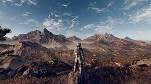

Bethesda Games Studio Fan Page
Starfield
Starfield is an open-world space role-playing game set across a massive universe of planets, star systems, and uncharted space. Players join the organization Constellation as explorers searching for mysterious artifacts while uncovering the secrets of humanity’s future among the stars.
Players can travel between planets, explore alien worlds, mine resources, build outposts, and customize their own spacecraft. The game also features space combat, trading, faction quests, and deep character customization, allowing players to shape their own playstyle and story.
With endless exploration and discovery, Starfield offers a vast sci-fi experience where every journey through space can lead to something new.

Starfield Youtubers
If you want to get more out of Starfield, whether through deeper understanding, creative builds, or immersive gameplay ideas, these three YouTubers are some of the best places to start:
MrMattyPlays
Focuses on Starfield news, updates, and discussion around Bethesda games. His content is especially useful for staying up to date with changes, understanding community reactions, and getting a clearer picture of how Starfield fits into the wider RPG landscape.
ESO
Known for highly immersive playthroughs, roleplay-style storytelling, and modded content. ESO shows how Starfield can be expanded beyond its base experience, offering creative ways to explore planets, build characters, and enhance gameplay.
FudgeMuppet
Specializes in detailed character builds and roleplay concepts that help players craft unique identities and playstyles. Their videos are great for anyone who wants to experiment with different ways of experiencing Starfield’s mechanics and world.
Together, these creators provide a mix of information, inspiration, and creativity that can help you get more enjoyment and depth out of Starfield.